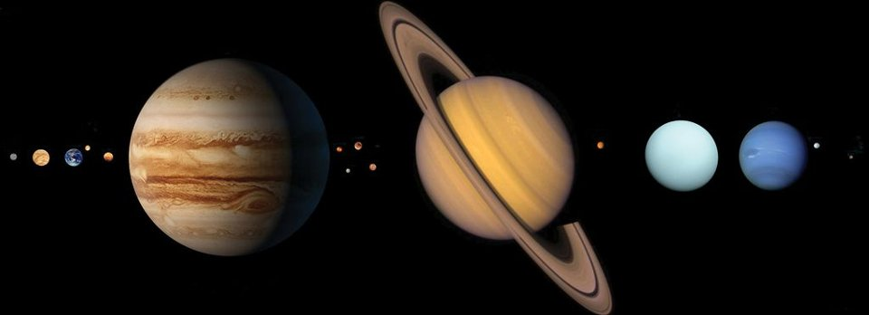
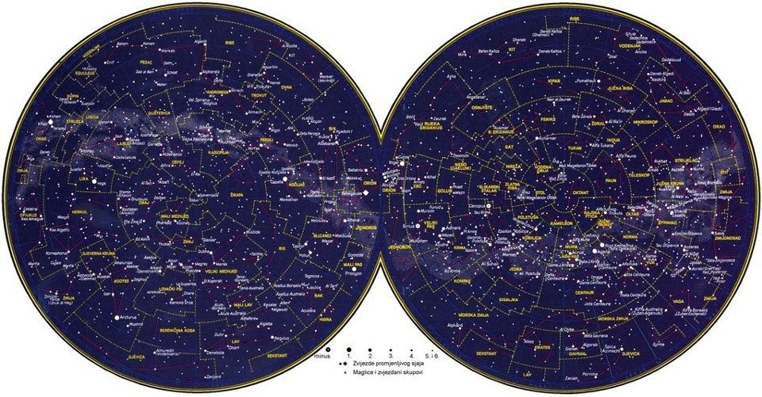

Svemirske letjelice namijenjene su letu izvan Zemljine atmosfere, to jest u Zemljinoj orbiti, Sunčevu sustavu ili dalje u svemiru. Automatske svemirske letjelice nemaju posadu i namijenjene su obavljanju različitih znanstvenih i istraživačkih zadaća. Razlikuju se umjetni sateliti (gibaju se u orbiti oko Zemlje ili drugih svemirskih tijela) i međuplanetarne letjelice (gibaju se putanjom među udaljenijim svemirskim tijelima). Hrvatska enciklopedija predstavlja nove članke o svemirskim letjelicama Pioneer, Voyager 1, Voyager 2, Galileo, Cassini-Huygens i New Horizons.
Pioneer su američke svemirske letjelice namijenjene istraživanju heliosfere, kozmičkoga zračenja, Mjeseca i planeta. Prva Pioneer letjelica lansirana je 1958., a posljednje - Pioneer 12 i Pioneer 13 - lansirane su 1978. Letjelice Pioneer 10 i Pioneer 11 u daleki svemir nose zlatne ploče sa slikovnom porukom pozdrava izvanzemaljskim bićima i informacijom o podrijetlu svemirske letjelice (položaju Zemlje u Sunčevu sustavu i položaju Sunčeva sustava u Mliječnoj stazi). Posljednji kontakt s letjelicom Pioneer 10 ostvaren je u siječnju 2003.
Voyager 1 je američka svemirska letjelica namijenjena istraživanju Jupitera i Saturna i prva svemirska letjelica koja je prešla heliopauzu i ušla u međuzvjezdani prostor. Lansirana je 1977., pokraj Jupitera je proletjela 1979., a pokraj Saturna 1980. Nastavila se udaljavati od Sunca i 2012. prešla heliopauzu, rubno područje heliosfere. Letjelica nosi pozlaćeni audiovizualni disk koji sadrži simboličke upute za uporabu, objašnjenje položaja Sunca s pomoću najbližih pulsara, zvukove i fotografije kojima se prikazuje raznolikost života i kulture na Zemlji.
Voyager 2 je američka svemirska letjelica koja je prva proletjela pokraj Urana i Neptuna. Lansirana je 1977., pokraj Jupitera je proletjela 1979., pokraj Saturna 1981., pokraj Urana 1986., a pokraj Neptuna 1989. Nastavila se udaljavati od Sunca i heliopauzu prešla 2018. Otkrila je Jupiterove prstene i satelit Adrasteju. Kao i letjelica Voyager 1, nosi pozlaćeni audiovizualni disk, za slučaj susreta s izvanzemaljskom inteligencijom.

Galileo je američka svemirska letjelica koja se prva gibala u orbiti oko Jupitera. Nazvana je po talijanskom fizičaru i astronomu Galileu Galileiju. Lansirana je 1989., obišla je Veneru i dva puta Zemlju, a u Jupiterovu atmosferu uletjela je 1995. Za gotovo osam godina obišla je Jupiter 35 puta i snimila njegovu atmosferu i površine četiriju najvećih satelita, Europe, Ije, Ganimeda i Kaliste. U rujnu 2003. potrošeno je gorivo te je letjelica usmjerena u Jupiterovu atmosferu i uništena.
Cassini-Huygens je američko-europska svemirska letjelica koja se prva gibala u orbiti oko Saturna. Nazvana je po talijansko-francuskom astronomu i matematičaru Jean-Dominiqueu Cassiniju i nizozemskom matematičaru, fizičaru i astronomu Christiaanu Huygensu. Lansirana je 1997., a u Saturnovu orbitu ušla je 2004. Iste se godine njezina sonda spustila na najveći Saturnov satelit Titan i snimila 350 fotografija njegove površine. U rujnu 2017. potrošeno je gorivo te je letjelica usmjerena u Saturnovu atmosferu i uništena.
New Horizons je američka svemirska letjelica koja je prva proletjela pokraj Plutona. Lansirana je u siječnju 2006., a u veljači 2007. prošla je pokraj Jupitera. U srpnju 2015. proletjela je pokraj Plutona i detaljno snimila atmosfere i površine Plutona i Plutonova satelita Harona. Otkrila je da se četiri manja Plutonova satelita Stiks, Nikta, Kerber i Hidra vrte vrlo brzo, za razliku od većine drugih satelita u Sunčevu sustavu. U siječnju 2019. proletjela je pokraj Arrokotha, transneptunskoga tijela u Kuiperovu pojasu.

Ako vas zanima astronomija, u Hrvatskoj enciklopediji možete pročitati još mnoge zanimljivosti o svemiru, zvijezdama, zviježđima, galaktikama, maglicama, planetima, ekstrasolarnim planetima, satelitima i kometima.